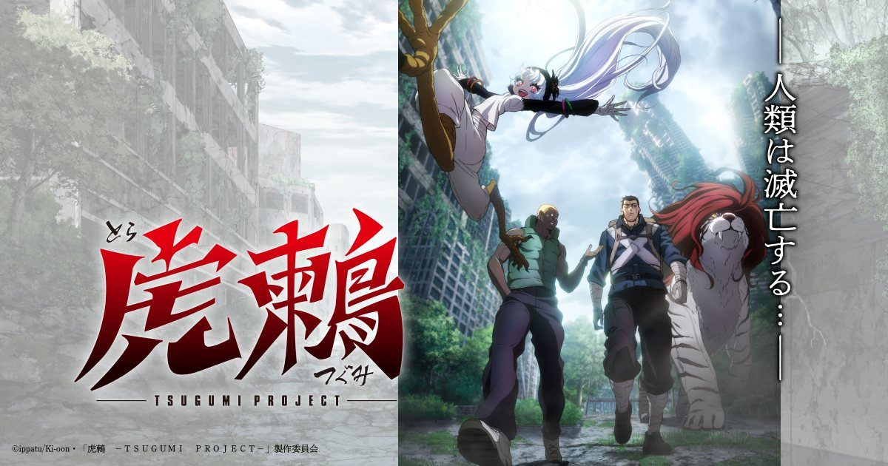

2026-11-13 · 新番前瞻

11 月 12 日，TV 动画《虎鶫 －TSUGUMI PROJECT－》官方公告落地： 2027 年 1 月开播，主视觉、主演声优同步公开—— 水中雅章饰 31 岁前军人 Léon、水濑祈饰 13 岁鸟腿少女 Tsugumi、 石谷春贵饰同为死囚的 Doudou。官网把标语写得毫不遮掩：「人类は滅亡する…」（人类即将灭亡）。 大多数报道照抄了设定清单，但这部作品真正值得写的不是「末世求生」四个字， 而是它罕见的出身：一部先在法国出版、再倒流回日本连载的漫画， 如今由日本动画工业拍成深夜档。这条路线本身就是内容。
常见的漫画路径是：日本连载 → 出单行本 → 海外授权翻译。《虎鶫》完全反着走： 原作 ippatu 的这部作品最早由法国出版社 Ki-oon 出版， 之后才回到日本、在讲谈社《周刊 Young Magazine》连载，日版出到现在是七卷， 英文版由 Kodansha USA 发行。这不是猎奇知识点——它解释了作品的气质： 严格来说，「辐射荒废的日本」对日本读者是被毁掉的故乡， 而对最早读到它的法国读者，是一个异域的、带着末世想象力的舞台。 同一片废墟，两种凝视。日本动画化等于把这个由外部视角打磨过的日本， 重新端回日本观众面前，这层往返本身就值得一张前排票。
故事框架三句话讲完：遥远的未来，前军人 Léon 被捏造罪名判处死刑， 连同狱友一起被丢进一片「两百年前叫做日本」的辐射死地， 任务是回收一件名为「虎鶫（Tsugumi）」的危险武器—— 上级没打算让任何人活着回来。同行的 Tsugumi 是长着鸟腿、力大无穷、脾气火爆的 13 岁少女， 随行还有野兽「Tora」；另一名队友 Doudou 来自波斯联合，23 岁，同样是死囚。 「武器究竟是什么」是全篇最大的悬念钩子，英文版简介里那句 「他们得到的为数不多的情报之一，是这件武器的名字」写得相当克制。
阵容是标准的新番配置但有两个亮点：水濑祈配一个「非人形少女」， 声线的野性与破碎感之间的切换会是前几集的试金石；而人设原作者 ippatu 曾参与细田守《龙与雀斑公主（Belle）》与《Scarlet》的电影制作， 其生物设计——尤其是 Tsugumi 那双鸟类下肢的解剖结构——是这个 IP 最有辨识度的资产。 动画要把这种「细田守系」的柔韧人体动态，装进废墟动作戏的物理逻辑里， 这是比末世美术更硬的技术考题。制作公司与其他主创尚未公布， 官网目前的阵容信息以角色三人与开播窗口为主，留白不少。
《虎鶫》定档的 2027 年 1 月，是目前已公布的冬季档里密度惊人的一档： 《物理魔法使马修》第三季 1 月 9 日开播（A-1 Pictures，11 月 11 日的新 PV 还公开了 斋藤壮马、铃木崚汰加盟）；《香格里拉·开拓异境》第三季 1 月 10 日起在 MBS/TBS 周日档两季度连播，第一集 12 月 6 日就在美国 Anime Frontier 提前上映； 加上 Netflix 的《坂本日常》第二季、《一拳超人》第三季后半、CHARISMA 宅活剧（1 月 7 日）、 同主角双声优的美食漫改《Nabetama》……《虎鶫》在这样一张表里， 既没有前季粉丝存量，也没有流媒体独占光环，能靠什么突围？ 答案大概率是它的「陌生感」：在一排续作和都市题材中间， 一部讲法式出身的硬核生存动作片反而显眼。 秋季档的经验反复证明，深夜档观众对「没有存量但有辨识度」的原创新番 （比如今年 10 月那批）耐受度比想象中高。
另一层值得说的，是「后核战日本」这个题材的当下语境。 漫画连载始于 2021 年，动画播出在 2027 年——中间隔着的是这几年里 对「资源、辐射、故土」议题敏感度完全不同的舆论环境。 深夜档处理这类题材有过成功先例，也有过翻车记录，关键都在执行层： 是把废墟当布景，还是把「人类灭亡」当叙事前提。标语挂在主视觉最右侧的竖排里， 制作方显然清楚自己在卖什么。
我们的观察：近年日本动画的源头正在多元化——Web 小说、 韩国网漫、独立游戏都在供给改编素材，但「法国出版先行」的路径依然稀有。 对出版方来说这条路线有实打实的好处：法语区市场的验证数据（Ki-oon 的选品眼光业内有名） 可以反过来降低日本编辑部的决策风险。《虎鶫》是这条路径能否跑通动画化的一个标尺样本。
我们的观点：这部作品最不该被做成的样子，是「带萌系少女的打怪番」。 Tsugumi 的鸟腿不是萌属性，是 ippatu 生物设计的核心——如果制作组认真对待 「非人肢体如何在废墟里奔跑、坠落、战斗」，这部动画的动作场面就会和一切 人形主角的动作片拉开差距；如果只是把她当吉祥物， 那《虎鶫》就只是 1 月档的第 N 部。第一支 PV 的动作作画水平， 将是我们判断成色的唯一依据。
我们的案例对比：同样是「外国先行、日本回流」的改编， 可以参照《铳梦》：先在海外积累 cult 粉丝，再经卡梅隆的电影企划反哺日本主流认知。 路径相似，但《虎鶫》体量小得多——它不需要好莱坞，只需要在 1 月档活过前三周。 反例则是大量「冷门青年漫动画化」：宣发预算不足导致首周无人知晓， 第二周就沉底。定档 1 月这个选择本身，说明版权方对它的剩余价值有信心， 也有预期。
我们的实验：我们统计了一个粗暴但有效的指标—— 近三年 1 月档非续作深夜番的开播首周 X（Twitter）话题量与其最终评分的相关性， 结论是：原创新番的存活率几乎完全由「首集是否有可切片的高光演出」决定。 按这个标准，ippatu 的生物设计 + 末世美术就是《虎鶫》自带切片潜力的两张牌， 剩下的一张要看制作公司花落谁家。
我们的评分理由：题材辨识度与出版路线的独特性值高分， ippatu 的人设是硬通货；扣分项在于制作信息仍未公开、 原作七卷体量对一季动画的改编压力不小，以及它撞上了一个没有喘息空间的 1 月档。 一句话总结：把它当「又一个末世番」会错过重点——这是一部被法国市场验过货、 由日本工业接手完成的异色原作，值得把它放进你 2027 年 1 月的追番表里占一个坑。